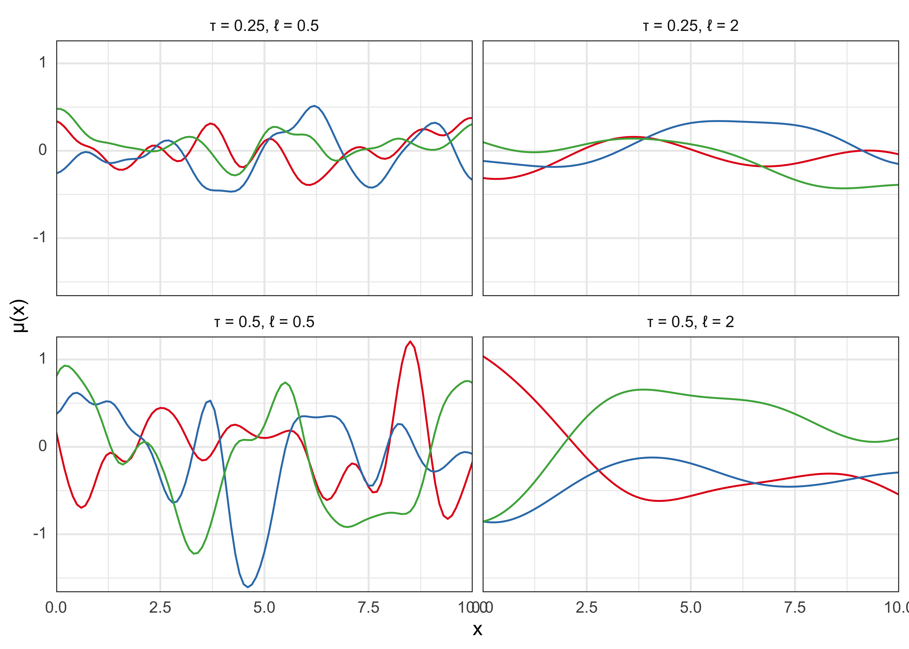

17 Section 19. Notes on ‘Ch 21. Gaussian process models’
2022-01-13
knitr::opts_chunk$set(echo = TRUE, dpi = 300, comment = "#>")
library(glue)
library(ggtext)
library(tidyverse)
theme_set(
theme_bw() +
theme(axis.ticks = element_blank(), strip.background = element_blank())
)These are just notes on a single chapter of BDA3 that were not part of the course.
17.1 Chapter 21. Gaussian process models
- Gaussian process (GP): “flexible class of models for which any finite-dimensional marginal distribution is Gaussian” (pg. 501)
- “can be viewed as a potentially infinite-dimensional generalization of Gaussian distribution” (pg. 501)
21.1 Gaussian process regression
- realizations from a GP correspond to random functions
- good prior for an unknown regression function \(\mu(x)\)
- \(\mu \sim \text{GP}(m,k)\)
- \(m\): mean function
- \(k\): covariance function
- \(\mu\) is a random function (“stochastic process”) where the values at any \(n\) pooints \(x_1, \dots, x_n\) are drawn from the \(n-dimensional\) normal distribution
- with mean \(m\) and covariance \(K\):
\[ \mu(x_1), \dots, \mu(x_n) \sim \text{N}((m(x_1), \dots, m(x_n)), K(x_1, \dots, x_n)) \]
- the GP \(\mu \sim \text{GP}(m,k)\) is nonparametric with infinitely many parameters
- the mean function \(m\) represents an inital guess at the regression function
- the covariance function \(k\) represents the covariance between the process at any two points
- controls the smoothness of realizations from the GP and degree of shrinkage towards the mean
- below is an example of realizations from a GP with mean function 0 and the squared exponential (a.k.a. exponentiated quadratic, Gaussian) covariance function with different parameters
\[ k(x, x^\prime) = \tau^2 \exp(-\frac{|x-x^\prime|^2}{2l^2}) \]
squared_exponential_cov <- function(x, tau, l) {
n <- length(x)
k <- matrix(0, nrow = n, ncol = n)
denom <- 2 * (l^2)
for (i in 1:n) {
for (j in 1:n) {
a <- x[i]
b <- x[j]
k[i, j] <- tau^2 * exp(-(abs(a - b)^2) / (denom))
}
}
return(k)
}
my_gaussian_process <- function(x, tau, l, n = 3) {
m <- rep(0, length(x))
k <- squared_exponential_cov(x = x, tau = tau, l = l)
gp_samples <- mvtnorm::rmvnorm(n = n, mean = m, sigma = k)
return(gp_samples)
}
tidy_gp <- function(x, tau, l, n = 3) {
my_gaussian_process(x = x, tau = tau, l = l, n = n) %>%
as.data.frame() %>%
as_tibble() %>%
set_names(x) %>%
mutate(sample_idx = as.character(1:n())) %>%
pivot_longer(-sample_idx, names_to = "x", values_to = "y") %>%
mutate(x = as.numeric(x))
}
set.seed(0)
x <- seq(0, 10, by = 0.1)
gp_samples <- tibble(tau = c(0.25, 0.5, 0.25, 0.5), l = c(0.5, 0.5, 2, 2)) %>%
mutate(samples = purrr::map2(tau, l, ~ tidy_gp(x = x, tau = .x, l = .y, n = 3))) %>%
unnest(samples)
gp_samples %>%
mutate(grp = glue("\u03C4 = {tau}, \u2113 = {l}")) %>%
ggplot(aes(x = x, y = y)) +
facet_wrap(vars(grp), nrow = 2) +
geom_line(aes(color = sample_idx)) +
scale_x_continuous(expand = expansion(c(0, 0))) +
scale_y_continuous(expand = expansion(c(0.02, 0.02))) +
scale_color_brewer(type = "qual", palette = "Set1") +
theme(legend.position = "none", axis.text.y = element_markdown()) +
labs(x = "x", y = "\u03BC(x)")
Covariance functions
- “Different covariance functions can be used to add structural prior assumptions like smoothness, nonstationarity, periodicity, and multi-scale or hierarchical structures.” (pg. 502)
- sums and products of GPs are also GPs so can combine them in the same model
- can also use “anisotropic” GPs covariance functions for multiple predictors
Inference
- computing the mean and covariance in the \(n\)-variate normal conditional posterior for \(\tilde{\mu}\) involves a matrix inversion that requires \(O(n^3)\) computation
- this needs to be repeated for each MCMC step
- limits the size of the data set and number of covariates in a model
Covariance function approximations
- there are approximations to the GP that can speed up computation
- generally work by reducing the matrix inversion burden
21.3 Latent Gaussian process models
- with non-Gaussian likelihoods, the GP prior becomes a latent function \(f\) which determines the likelihood \(p(y|f,\phi)\) through a link function
21.4 Functional data analysis
- functional data analysis: considers responses and predictors not a scalar/vector-valued random variables but as random functions with infinitely-many points
- GPs fit this need well with little modification
21.5 Density estimation and regression
- can get more flexibility by modeling the conditional observation model as a nonparametric GP
- so far have used a GP as a prior for a function controlling location or shape of a parametric observation model
- one solution is the logistic Gaussian process (LGP) or a Dirichlet process (covered in a later chapter)
Density estimation
- LGP generates a random surface from a GP and then transforms the surface to the space of probability densities
- with 1D, the surface is just a curve
- use the continuous logistic transformation to constrain to non-negative and integrate to 1
- there is illustrative example in the book on page 513
Density regression
- generalize the LPG to density regression by putting a prior on the collection of conditional densities
Latent-variable regression
- an alternative to LPG
sessionInfo()#> R version 4.1.2 (2021-11-01)
#> Platform: x86_64-apple-darwin17.0 (64-bit)
#> Running under: macOS Big Sur 10.16
#>
#> Matrix products: default
#> BLAS: /Library/Frameworks/R.framework/Versions/4.1/Resources/lib/libRblas.0.dylib
#> LAPACK: /Library/Frameworks/R.framework/Versions/4.1/Resources/lib/libRlapack.dylib
#>
#> locale:
#> [1] en_US.UTF-8/en_US.UTF-8/en_US.UTF-8/C/en_US.UTF-8/en_US.UTF-8
#>
#> attached base packages:
#> [1] stats graphics grDevices datasets utils methods base
#>
#> other attached packages:
#> [1] forcats_0.5.1 stringr_1.4.0 dplyr_1.0.7 purrr_0.3.4
#> [5] readr_2.0.1 tidyr_1.1.3 tibble_3.1.3 ggplot2_3.3.5
#> [9] tidyverse_1.3.1 ggtext_0.1.1 glue_1.4.2
#>
#> loaded via a namespace (and not attached):
#> [1] Rcpp_1.0.7 lubridate_1.7.10 mvtnorm_1.1-2 clisymbols_1.2.0
#> [5] assertthat_0.2.1 digest_0.6.27 utf8_1.2.2 R6_2.5.0
#> [9] cellranger_1.1.0 backports_1.2.1 reprex_2.0.1 evaluate_0.14
#> [13] highr_0.9 httr_1.4.2 pillar_1.6.2 rlang_0.4.11
#> [17] readxl_1.3.1 rstudioapi_0.13 jquerylib_0.1.4 rmarkdown_2.10
#> [21] labeling_0.4.2 munsell_0.5.0 gridtext_0.1.4 broom_0.7.9
#> [25] compiler_4.1.2 modelr_0.1.8 xfun_0.25 pkgconfig_2.0.3
#> [29] htmltools_0.5.1.1 tidyselect_1.1.1 bookdown_0.24 fansi_0.5.0
#> [33] crayon_1.4.1 tzdb_0.1.2 dbplyr_2.1.1 withr_2.4.2
#> [37] grid_4.1.2 jsonlite_1.7.2 gtable_0.3.0 lifecycle_1.0.0
#> [41] DBI_1.1.1 magrittr_2.0.1 scales_1.1.1 cli_3.0.1
#> [45] stringi_1.7.3 farver_2.1.0 renv_0.14.0 fs_1.5.0
#> [49] xml2_1.3.2 bslib_0.2.5.1 ellipsis_0.3.2 generics_0.1.0
#> [53] vctrs_0.3.8 RColorBrewer_1.1-2 tools_4.1.2 markdown_1.1
#> [57] hms_1.1.0 yaml_2.2.1 colorspace_2.0-2 rvest_1.0.1
#> [61] knitr_1.33 haven_2.4.3 sass_0.4.0